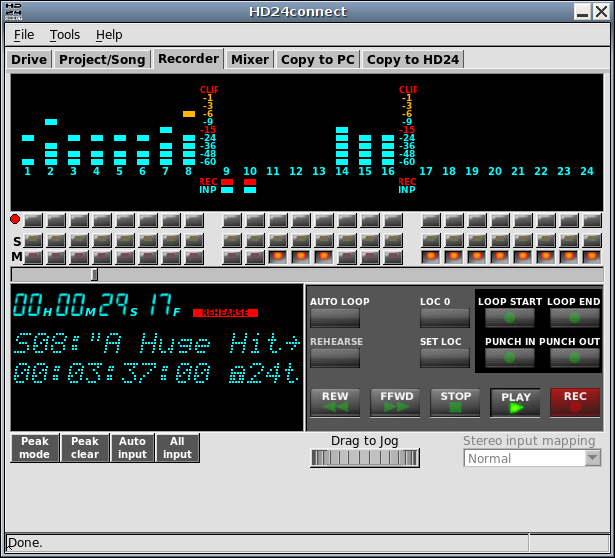

Before exporting audio, you may wish to audition it, for example to specify which part of a track you want to export. The Recorder tab facilitates this by offering a convenient, familiar interface.

The top of the screen shows a 24-track LED display, similar to the display of the HD24 recorder itself. When auditioning a drive with HD24connect, it will faithfully simulate what the HD24 recorder would have displayed.
There are three rows of buttons under the display. The first row of buttons record-enables tracks. The record-enable buttons are present in the user interface in preparation for realtime recording functionality. Clicking the dot on the left of this button row allows you to record-enable all tracks at once. As realtime recording functionality is not yet implemented, the Recorder tab is locked to Rehearse mode.
The second and third button rows contain Solo and Mute buttons. This allows you to single out tracks while auditioning the song.
Under the three button rows, we find the location slider. This slider shows how far audio playback has progressed, and allows us to quickly jump to any point in the song by dragging its handle with the mouse. The bottom left shows an information display. This display shows the current playback location and status messages. Beneath the display, there are four buttons, and there is a drop-down on the right.
The transport controls are arranged in a layout similar to the Little Remote Control that came with your HD24 recorder. The Rehearse button is locked. It is included for the realtime recording feature which will be implemented in a future release.
During audio preview, the track selection checkboxes on the Copy to PC tab will light up for tracks that have signal. It is possible to switch between songs during audio preview. However, any locate points set in-memory before the switch will be lost. The jog wheel under the transport controls permits setting the 'tape head' or 'song cursor' with sub-frame accuracy. Simply drag it left or right to move the song cursor. The display will show information about the current song. When transport is not running, the current HD24tools version is displayed for a short while.
* This functionality is still experimental and may currently be disabled.